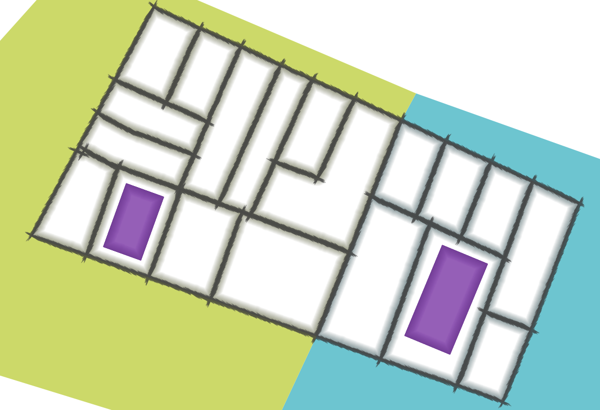

Formats de stockage des règles
SimPLU3D ne possède pas un format pour stocker les règles morphologiques. En effet, les différentes expériences ont montré que suivant les besoins, l'échelle d'étude et les réglementations locales, les règles nécessaires à modéliser pouvaient beaucoup varier. Ainsi, pour rester générique, c'est à l'utilisateur de définir comment stocker ces règles et implémenter l'interface Predicate en fonction de ces règles.
Cependant, dans cette partie nous présenterons d'abord un exemple de code avec une démarche conseillée pour intégrer des règles à partir d'un tableau. Puis, nous pointerons vers différentes expérimentations utilisant différents formats de règles.
Intégration de règles sous forme d'un tableau
Ici, nous présenterons un exemple pour charger des règles stockées dans un fichier .csv et pour appliquer ces règles aux différentes zones d'un plan de zonage via le SamplerPredicate . Le code est disponible dans la classe fr.ign.simplu3d.simulRules.SimulWithRules du projet SimPLU3D-tutorial. Les données utilisées sont stockées dans le dossier resources/simulationWithRules qui contient notamment un fichier rules.csv en plus (mis en tableau ci dessous). La jointure entre les zones urbaines et les valeurs de ce tableau s'effectue via le champ libelle.
| libelle | distReculVoirie | distReculFond | distReculLat | distanceInterBati | maximalCES |
|---|---|---|---|---|---|
| ub1 | 2 | 3 | 4 | 8 | 0.5 |
| ub2 | 4 | 5 | 4 | 8 | 1 |
Le résultat de la simulation est visible ci dessous, seules 2 parcelles sont simulées (celles avec 1 comme valeur pour l'attribut SIMUL)

Code de réglementation
Au préalable, une classe de réglementation a été créée (fr.ign.simplu3d.simulRules.RegulationTuto). Cette classe implémente l'interface IZoneRegulation qui permet de rattacher une réglementation à une zone (classe UrbaZone). Cette interface a déjà été vue dans la section présentant le modèle géographique.
Il s'agit d'une simple classe ayant des accesseurs aux différents paramètres du règlement ainsi qu'à son libellé.
Code de simulation
Le code de simulation ressemble à celui présenté dans la simulation de base avec quelques modifications. La plus importante différence concerne la méthode readAndAssociateRules qui parse le fichier rules.csv contenant les règles et créé le lien entre les différentes zones urbaines et les instances des différents règlements.
public static void readAndAssociateRules(String ruleFile, Environnement env) throws Exception {
// Creation of a map to create a link between id regulation and regulation
Map<String, RegulationTuto> mapLibelleRegulation = new HashMap<>();
////////////////////
//// READING THE CSV FILE to complete the map
////////////////////
BufferedReader in = new BufferedReader(new FileReader(new File(ruleFile)));
// The first line is the head
in.readLine();
String line = "";
// For each line
while ((line = in.readLine()) != null) {
// We create a new regulation
RegulationTuto r = new RegulationTuto(line);
// We add it to the map with it is name
if (r != null) {
mapLibelleRegulation.put(r.getLibelle(), r);
}
}
in.close();
////////////////////
//// ASSOCIATING UrbaZone and regulation
////////////////////
for (UrbaZone zone : env.getUrbaZones()) {
// We use the libelle to make a join between regulation and zone
RegulationTuto regulation = mapLibelleRegulation.get(zone.getLibelle());
// We create the link in the two directions for convenience
zone.setZoneRegulation(regulation);
if (regulation != null) {
regulation.setUrbaZone(zone);
}
}
}
On peut également noter par ailleurs l'utilisation de la méthode hasToBeSimulated pour ne simuler que les parcelles ayant 1 comme valeur dans le champs simul du fichier contenant les parcelles.
if (!currentCadastralParcel.hasToBeSimulated()) {
continue;
}
Dans cet exemple, il n'y a qu'une seule sous-parcelle par parcelle (c'est-à-dire que chaque parcelle est complètement incluse dans une seule zone urbaine). Néanmoins, il est possible de considérer plusieurs règlements au sein d'une parcelle et d'accéder à ces règlements via les sous-parcelles. Cela nécessite dans le prédicat de vérifier pour chacun des objets à quelle(s) sous-parcelle(s) il appartient et à appliquer les vérifications en fonction de ces règlements. Une seconde complexité est de proposer une méthode pour réconcilier ces différents règlements (Par exemple, comme mesure-t-on une contrainte de distance entre 2 objets qui se trouvent dans 2 zones différentes ?). Cet aspect est compliqué à formaliser, mais un exemple est défini dans la classe MultiplePredicateArtiScales du projet ArtiScales.
Autres exemples d'utilisation de fichier de règles
Deux types de formats de règles ont été utilisés :
-
Format OCL(Object Constraint Language) : le format OCL permet de modéliser des contraintes à partir d'instances d'un modèle. Ainsi, l'utilisation de règles au format OCL permet une grande expressivité comme il peut utiliser et combiner tous les concepts du modèle géographique de SimPLU3D. Cependant, cette expressivité a un coût car le temps d'évaluation d'une contrainte formulée en OCL est beaucoup plus longue que son équivalent programmée en Java. Pour en savoir plus, vous pouvez consulter la page Github de SimPLU3D-OCL ;
-
Format CartoPLU+ : le format CartoPLU+ stocke les règles sous format d'un tableau CSV à partir d'une sélection de contraintes effectuée par l'IAUIDF et la DRIEA. Pour en savoir plus, vous pouvez consulter la page Github du projet SimPLU3D-IAUIDF.